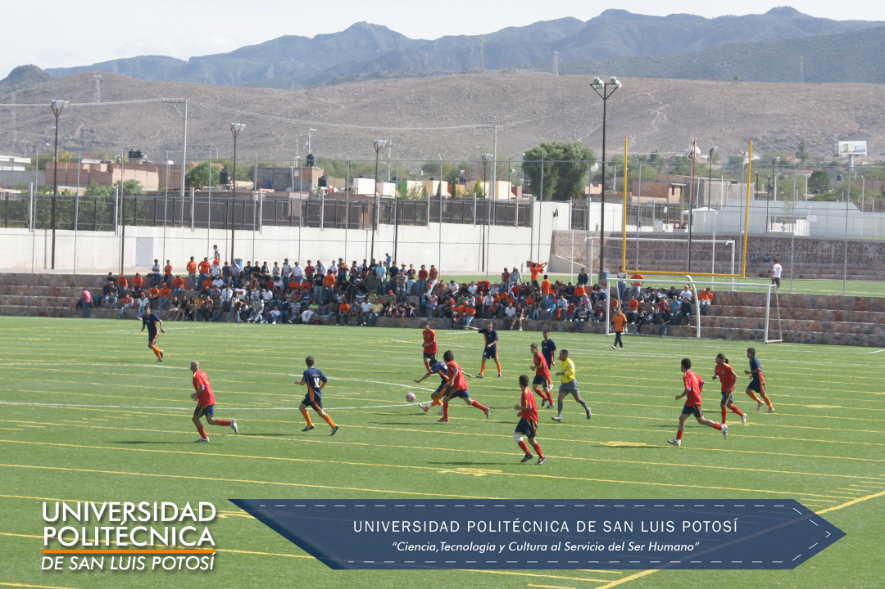
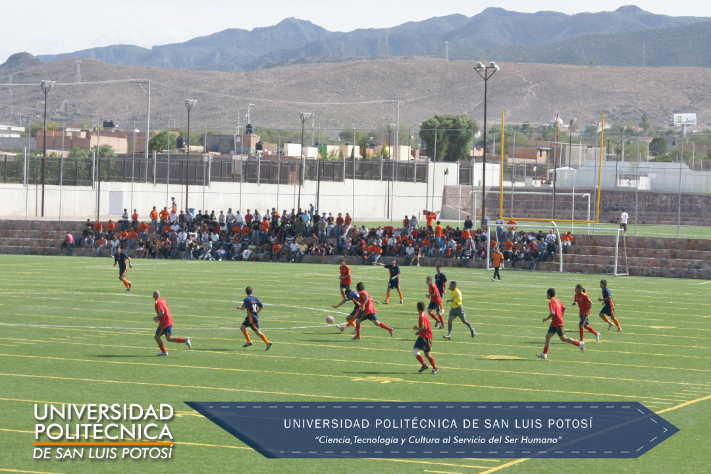

Participación Reciente
Recientemente tuvimos la participación de nuestra universidad en la etapa estatal de la universiada 2015 con los siguientes equipos:
| Disciplina | Varonil | Femenil |
|---|---|---|
| Fútbol Rápido | x | x |
| Basquetbol | x | x |
| Voleibol | x | x |
| Taekwondo | x | x |
| Atletismo | x | x |
| Triatlón | x | |
| Judo | x | x |
| Tenis | x |


 

Con una destacada participación de los equipos de fútbol rápido femenil, taekwondo, triatlón y tenis logrando el pase a la etapa regional.
Los equipos de fútbol soccer varonil, fútbol rápido femenil, basquetbol varonil y voleibol femenil actualmente se preparan para participar en el torneo nacional de Universidades Politécnicas que se llevará a cabo en la ciudad de Mazatlán, Sinaloa del 17 al 22 de marzo de 2015.